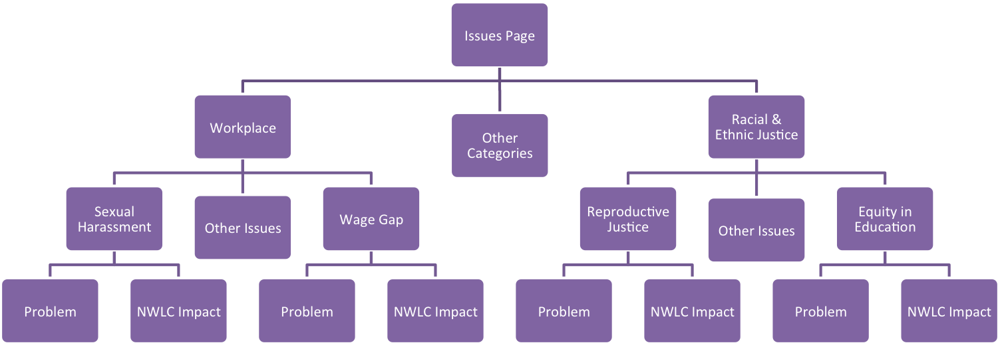

Rushi Shah on 13 August 2017 (feat. Madalyn Marabella)
I was fortunate enough to have a paid internship this summer, and I am planning to donate a portion of my salary. I'm hoping to encourage people in a similar position to do the same. I've selected a list of charities I feel strongly about and will match your donations to any of those organizations (up to 10% of my summer income)!
Also, since I want people to pledge to do something similar to this, I am setting aside an additional 5% of my income that I will give to a charity from your list if you decide to make a similar post. So if you list your favorite nonprofits and pledge to match my contribution, I will donate part of that 5% to a charity from your list.
If you are at all interested in either plan, please slide into my DMs. Message me if you're thinking about contributing, if you have ideas for charities that should definitely be on my list, if you were going to donate some of your internship earnings on your own, or even if you just miss me and want to catch up <3 . Alternatively, if you want to participate anonymously, just email me a receipt of your contribution.
Without further ado here are the charities I feel strongly about:
In the committee of thirteen senators in charge of replacing the AHCA, not a single one is female. Without any female perspective in the legislation it is hard to imagine the bill will suitably address (or even consider) women's healthcare issues like maternity leave, let alone progressive reforms like subsidies for menstrual hygiene products.
The homogenous committee is just one instance of a larger, overarching problem. The fact that women are proportionally underrepresented in our government perpetuates the systematic obstacles that women face. Giving females a legislative voice is an important step towards addressing the plight of women.
Right now only about 20% of our congressional representation is female, despite the fact that women win elections in the same proportion as men when they run. So if we want more female representation the first step is clear: get more female candidates.
As I mentioned briefly in the She Should Run pitch, I think legislation is the most influential tool we have to dismantle systemic sexism and discrimination, especially for "women who are low income and those who face multiple forms of discrimination". The lawyers and advocates at NWLC leverage that opportunity and "have been on the frontlines of virtually every advance for women for more than 40 years".
I appreciate how clearly this organization expresses their vision. Their about us page contains links to category pages that each link to issue pages with information about the problem and their solutions. It creates a tree structure like the graphic.

This clarifies exactly what matters to the organization and what they're doing about it. Such a powerful nonprofit needs a clearly defined plan for execution, and this gives me confidence that it is staying on task and maintains accountability. Classic lawyers with their organization and specificity.
I personally know victims of rape.
Many of us probably do since every 98 seconds another person in the USA experiences sexual assault. Thus RAINN targets a problem we hear a lot about but rarely know what to do about. They have programs for public education, public policy, and most importantly victim services.
One of their initiatives I was most surprised to learn about addresses the backlog of forensic evidence kits:
There are numerous reasons this backlog is growing, and RAINN is working to fix that because by neglecting the backlog of forensic evidence, we fail victims of sexual assault.
(This section is courtesy of the lovely Madalyn Marabella, who was invaluable in making this whole thing actually happen)
You probably haven't heard of obstetric fistulas -- they were eradicated in the U.S. and Europe more than a century ago. Although a simple treatment exists, over one million women in sub-Saharan Africa and Asia live with untreated fistulas, tears in the vagina and internal organs that result from obstructed labor or sexual violence.
The internal tear causes "permanent incontinence of urine and/or feces," which leads to physical discomfort, an unpleasant smell, and leaking bodily fluids. Because of the stigma surrounding these symptoms, women with fistulas are often "abandoned by their husbands and ostracized by their communities."
The Fistula Foundation has saved over 25,000 women from life as "modern-day lepers." Charity Navigator, Charity Watch, and The Life You Can Save recommend this organization to donors because it completely changes women's lives using a relatively cheap medical procedure.
It is sickening that some communities shove victims of physical and emotional trauma to the fringes of society. Women in cash-poor areas of the world should not lose access to education, work, and human interaction because of a medical complication with a frustratingly simple solution.
ALSO, if you donate to the Fistula Foundation's campaign to build a new facility in DRC before August 31, an anonymous donor will match your donation, which means your contribution will be quadrupled!
Like I said, I will match your donations to any of these charities. I'm hoping to reach 10% of my summer income, so any donation on your part (small or large) is much appreciated. I can take venmo (@ rushisshah) or cash or a receipt of your donation (which you can message me on Facebook, or email me at 2016rshah [at] gmail [dot] com), whatever is convenient for you! Just reach out to me if you want to contribute :)